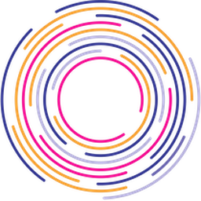

AI Club Committee
This dashboard is for committee members. Enter the password to continue.
Unlock

Cambridge AI Club
Committee Dashboard
Schedule
Rota
Speakers
My view
Committee
Next Meeting
Team actions
Guidelines
Handover
Loading rota…
↻ Refresh
Rota sheet ↗
Speaker tracker ↗
🔒 Lock